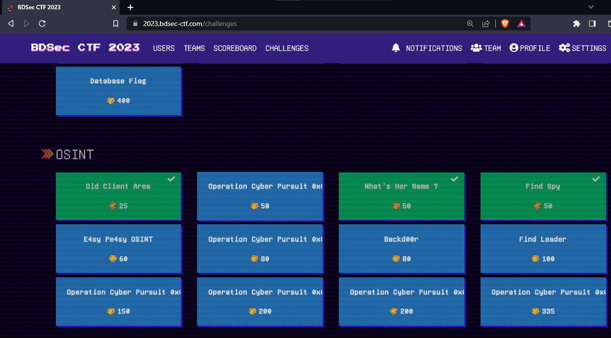
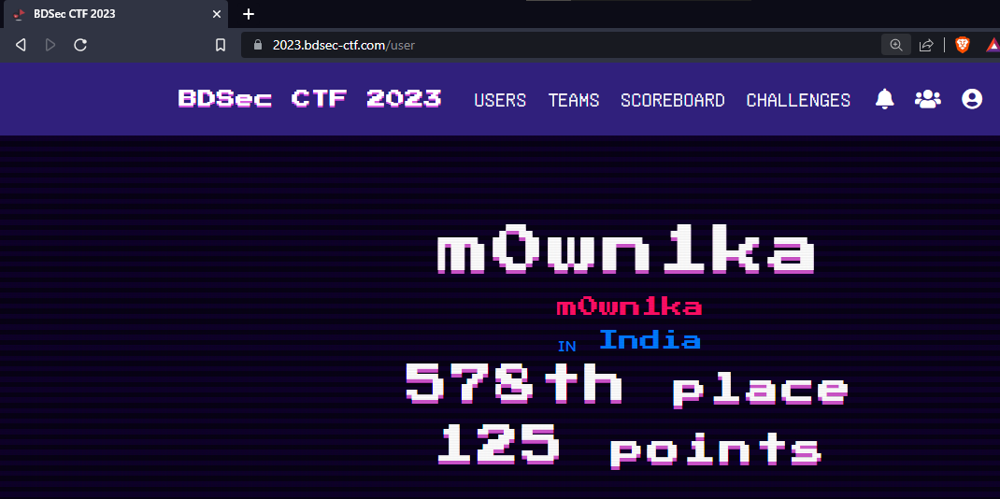
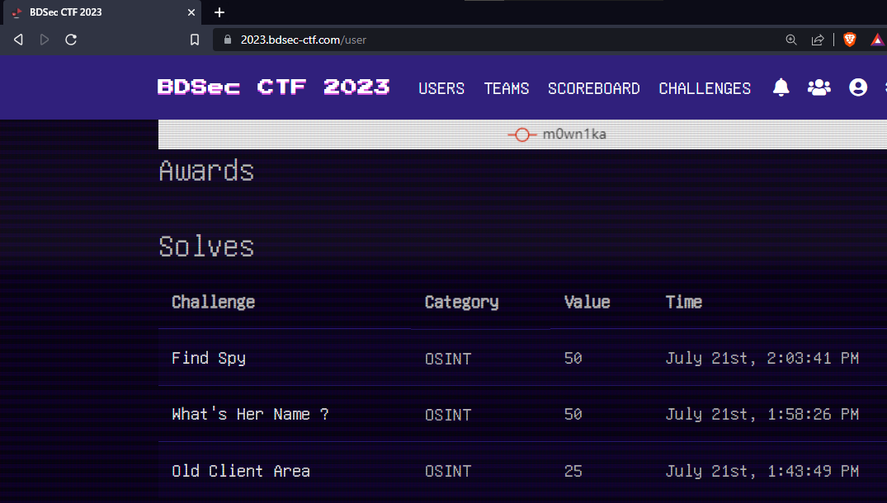

Old Client Area
25
Our sponsor NS TechValley recently changed their billing system and they moved the billing/client area to a new domain/sub-domain. Can you find the old billing area domain/sub-domain?
If the old billing/client area domain/sub-domain is https://login.nstechvalley.com then the flag will be BDSEC{login.nstechvalley.com}
Author : NomanProdhan
ans
SEARCH FOR NSTECH VALLEY billing site
the first site name gives the correct ans
--------------------
What's Her Name ?
50
I have a cat. Can you find her name ?
Flag Format : BDSEC{name_here}
Author : NomanProdhan
ans
search for his inst handle in a old post he says its name in comment
==========================
Find Spy
50
A few years ago, the intelligence agencies in Bangladesh, DGFI (Directorate General of Forces Intelligence) and RAB (Rapid Action Battalion), discovered an Indian soldier who was allegedly working for an Indian external intelligence unit (RAW). This soldier was reportedly involved in espionage activities within Bangladesh, transmitting internal information from Bangladesh to India.My boss is seeking information of the name of the soldier and the specific date of his arrest. Can you help me find the name of the soldier and arrested date my boss is seeking?
Flag format: BDSEC{Firstname_Lastname:Month_day_year}
Example FLag: BDSEC{Parvez_Mosharaf:Januaray_01_2001}
Author: Siam
ans
in this site we will get ans
click here


